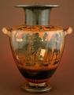

|  | Antimenes Painter Greek Hydria 530-500 B.C. Slip-glazed earthenware 20-1/8 inches high The John R. Van Derlip Fund 61.59
|
These presentations require the RealAudio player. It is available from www.real.com.
|
These presentations require the RealAudio player. It is available from www.real.com. |